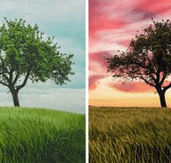
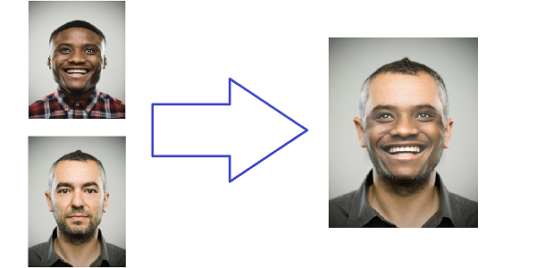

Muhammad Naeem
 |
Muhammad Naeem
Email: m.naeem4288@gmail.com |
Researcher with experience in deep learning, computer vision, and image generation spanning both industry and academia. Currently I'm pursuing my Master's in Photogrammetry and Remote Sensing from Wuhan University - China. I am working under the supervision of Prof. Xiongwu Xiao in the State Key Laboratory of Information Engineering in Surveying, Mapping and Remote Sensing (LIESMARS).
Previously, I worked as a Senior AI Developer and Team Lead at Octaloop Technologies, leading the Computer Vision Team in projects like Virtual Room Staging, Virtual Try-on, and Video Game Streaming Highlights Generation, ensuring seamless AI integration and mentoring team members.
I did my B.Sc in Computer Science (major in AI) from COMSATS University, Islamabad, Pakistan,
where I worked under Dr. Jamal Hussain Shah.
Education
-
COMSATS University Islamabad, Pakistan
Bachelor of Science in Computer Science
September 2019 – June 2023
Relevant Coursework: Data Structures and Algorithm, Digital Image Processing, Machine Learning, Computer Vision, Pattern Recognition
Experience
-
Octaloop Technologies
Senior AI Developer / Team Lead, Computer Vision Team
April 2024 – Aug 2025- Lead and oversee the Computer Vision Team, developing advanced solutions for projects such as Virtual Room Staging, Virtual Try-on, and Video Game Streaming Highlights Generation using scene analysis.
- Supervise and mentor team members, ensuring seamless integration of AI functionalities into client applications and fostering a collaborative environment to drive innovation.
- Stay updated with the latest advancements in AI and computer vision, applying cutting-edge techniques to enhance project performance and client satisfaction.
- Tools: Python, PyTorch, TensorFlow, YOLO-v5, OpenCV, Keras, Fast API, AWS, GCP
-
NineSol Technologies
AI Developer
April 2023 – April 2024- Developed and integrated the latest models into the backend of mobile and web applications, enhancing functionality with features such as Background Removal, Colorization, Document Scanning, Virtual Try-on, and Transcription.
- Stayed informed with the latest industry trends and emerging technologies, applying this knowledge to refine and advance features within diverse applications.
- Collaborated with other team members to smoothly embed advanced functionalities, ensuring seamless user experiences in mobile applications.
- Tools: Python, PyTorch, TensorFlow, YOLO-v5, OpenCV, Keras, Fast API, AWS, GCP
Projects

|
Virtual Staging Python, PyTorch, Stable Diffusion, ControlNet, OpenCV, NumPy, Scikit-Learn
|

|
Video-games Streaming Highlight Generation Python, PyTorch, OpenCV, NLTK, Scikit-Learn
|

|
Weed Detection Robotic Car YOLO-v5, TensorFlow, Flask, Tkinter, VS code, Colab, Roboflow, labelimg
|
|
Portrait Background Remover Python, PyTorch, U-Net, NumPy, Scikit-Learn, OpenCV
|
|
Colorize Gray scale Image Python, PyTorch, U-Net, Fast API, Colab, VS code
|

|
Image to Talking Portrait Python, Dlib, face-recognition, PyTorch, ffmpeg, OpenCV, Fast API, Colab, VS code
|

|
Document Scanner Python, OpenCV, PyTorch, Fast API, Colab, VS code
|
|  |
Sky Changer Python, PyTorch, UNET, Fast API, Colab, VS code
|

|
Text-to Image Generator Python, PyTorch, Hugging Face, Stable Diffusion, Fast API, Colab, VS code
|
|  |
Face Swap Python, Dlib, PyTorch, face-recognition, TensorFlow, Fast API, Colab, VS code
|
Achievements
- Awarded a fully funded scholarship for my Master's at the prestigious LIESMARS Lab, Wuhan University—renowned globally for its pioneering research in photogrammetry, remote sensing, and geospatial information science.
- Ranked 2nd with the ‘Weed Detection System’ in BS Computer Science Final Year Project.
- Won 2nd place at the 2023 Hackathon with the ‘Weed Detection System’.